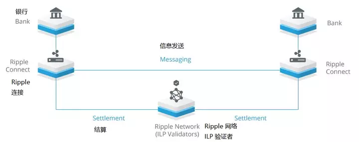
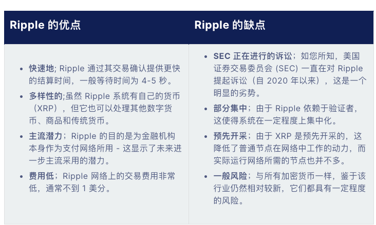

深入解析 Ripple（XRP）区块链
深入解析 Ripple（XRP）区块链
引言
Ripple（瑞波）是一家旨在通过区块链技术革新全球金融支付体系的科技公司，其原生加密货币为 XRP。Ripple 的目标是成为 “银行的加密货币”，为全球大型银行和金融机构提供 快速、低成本、高安全性 的跨境支付和结算解决方案，被视为更快、更便宜、更安全的 SWIFT 替代方案。
本文将深入探讨 Ripple 的业务背景、近期发展、XRP 的特性和用途，以及其支付生态系统的工作原理和争议。
一、公司背景与主要业务
1. 公司简介
- 成立背景：Ripple 的前身是 RipplePay，于 2004 年由 Ryan Fugger 开发，旨在创建一个去中心化的货币系统。
- 发展历程：2012 年，Chris Larsen 和 Jed McCaleb 共同创立了 OpenCoin，开发了新的 Ripple 协议，旨在实现直接的点对点资金转移，绕过传统银行系统的高费用和延迟。
- 使命愿景：利用区块链技术，为全球金融机构提供高效、低成本的跨境支付解决方案，改善全球资金流动性。
2. 融资与合作伙伴
- 融资情况：
- B 轮融资：Ripple 获得了 5,500 万美元 的 B 轮融资。
- 投资者：渣打银行、埃森哲风投、SCB Digital Ventures、泰国商业银行投资部门、日本金融集团 SBI Holdings 等知名机构。
- 合作伙伴：
- 全球银行机构：Ripple 已与全球超过 200 家 金融机构建立合作关系，包括渣打银行、西太平洋银行、澳大利亚国民银行、瑞穗金融集团、蒙特利尔银行金融集团和上海华瑞银行等。
- 网络拓展：这些合作伙伴的加入，增强了 Ripple 在全球金融网络中的影响力，加速了其支付解决方案的推广。
二、近期发展
1. 推出 CBDC 平台
- 背景：随着多个国家探索 央行数字货币（CBDC），如澳大利亚央行成功使用以太坊 Layer 2 完成首笔 eAUD 境外汇款，Ripple 宣布推出一个专为 CBDC 设计的平台。
- 平台功能：
- 账本技术：提供基于 Ripple 区块链的 私有账本，满足央行对安全性和隐私的需求。
- 发行人系统：允许发行人管理代币的全生命周期，从发行到销毁，提供全面的权限控制。
- 运营商系统：支持金融机构之间的结算和分配功能，促进 CBDC 的流通和使用。
- 用户钱包：为企业和零售用户提供安全的存储方式，支持离线支付系统，提升用户体验。
- 市场反应：
- 政策挑战：美国佛罗里达州签署法案，禁止联邦 CBDC 作为州内的货币，也禁止外国政府发行的 CBDC。这表明 Ripple 在推广 CBDC 解决方案时，需应对不同国家的监管环境。
三、XRP 代币
1. XRP 的用途
- 跨境桥梁货币：
- 桥接法币：XRP 的主要用途是作为 桥梁货币，促进不同法定货币（如美元、欧元、日元）之间的快速低成本转换。
- 高效汇款：XRP 网络能够在几秒钟内处理交易，相比于比特币（需要数分钟），显著提升了跨境汇款的速度。
- 交易费用支付单位：
- 低交易费：每笔交易的费用仅为 0.00001 XRP，几乎可以忽略不计，防止网络垃圾邮件和滥用。
2. XRP 的特性
- 预挖代币：
- 固定总量：XRP 的总发行量为 1,000 亿枚，在网络启动时已全部生成，没有挖矿过程。
- 供应管理：Ripple 公司持有部分 XRP，并计划通过托管机制每月释放 10 亿 XRP，以控制市场供应和稳定性。
- 无交易对手风险：
- 去中心化：XRP 不依赖于任何第三方机构，减少了交易对手风险。
- 可预测性：冻结和稳定的供应策略，使交易者和投资者能够更好地预测 XRP 的市场动态。
3. 风险与考虑
- 市场波动风险：
- 价格波动：如同其他加密资产，XRP 的价格受市场供需影响，可能出现剧烈波动。
- 投资风险：投资者应谨慎评估自身的风险承受能力。
- 网络费用：
- 账户激活费用：每个 Ripple 账户需要保留 20 XRP 作为小额储备，防止账户泛滥。
- 交易费用：每笔交易收取 0.00001 XRP，虽然微不足道，但大量交易可能累积成本。
四、Ripple 支付生态系统
1. 工作原理

Ripple 的支付网络旨在 适应银行现有的基础设施，为金融机构提供更高效的跨境支付解决方案。
- 交易特征：
- 分布式：银行和金融机构之间可以直接交易，无需中间机构，减少中间费用和延迟。
- 安全性：采用加密技术，确保交易隐私和数据安全。
- 可扩展性：高吞吐量设计，支持每秒处理数千笔交易，满足全球支付需求。
- 互操作性：能够连接多个网络和支付系统，实现全球范围的资金流动。
2. 优势
- 速度：交易确认时间为 3-5 秒，大大超过传统的跨境支付系统。
- 低成本：极低的交易费用，降低了跨境汇款的成本。
- 可靠性：基于区块链技术，提供了高度可靠的交易环境。

五、去中心化的争议
1. Ripple 的共识机制
- RPCA（Ripple 协议共识算法）：
- 独特机制：Ripple 使用自己的共识算法，而非比特币的工作量证明（PoW）或以太坊的权益证明（PoS）。
- 验证者节点：约有 1,000 个验证者节点，参与交易验证和共识达成。
- 唯一节点列表（UNL）：
- 定义：Ripple 从验证者节点中选出一个约 36 个节点的列表，称为 UNL，作为最终的交易仲裁者。
- 信任模型：UNL 节点被认为是可信的，不会欺骗网络参与者。
- 集中化问题：由于 Ripple 公司对 UNL 的选择具有影响力，被质疑存在集中化倾向。
2. 集中化的争议
- Ripple 的控制力：
- 节点控制：Ripple 公司直接控制了约 6 个节点，占全网的 16% 左右。
- UNL 的组成：自 2012 年以来，UNL 的节点组成变化不大，外部验证者进入列表的情况较少。
- 去中心化的努力：
- 降低控制比例：Ripple 公司表示正努力降低对网络的直接控制，增加网络的去中心化程度。
- 社区参与：鼓励更多的独立验证者加入网络，增强系统的安全性和多样性。
3. 影响与看法
- 速度与成本的权衡：
- 性能优势：集中化的验证器使 XRP 能够快速、廉价地处理交易。
- 去中心化折中：为实现高性能，可能在一定程度上牺牲了去中心化。
- 市场信任：
- 金融机构的接受度：许多大型银行和金融机构选择与 Ripple 合作，表明对其技术和安全性的认可。
- 社区质疑：部分加密社区成员对 Ripple 的集中化表示担忧，认为这与加密货币的去中心化理念相悖。
六、结论
Ripple 作为一家专注于革新全球金融支付体系的科技公司，利用 XRP 和独特的共识机制，为银行和金融机构提供了 高效、低成本、可扩展 的跨境支付解决方案。虽然在去中心化程度上存在争议，但其在速度、成本和安全性方面的优势，使其成为传统 SWIFT 系统的有力竞争者。
随着全球央行数字货币（CBDC）的发展和数字支付的普及，Ripple 正在积极拓展其平台功能，适应新的市场需求。然而，监管环境的不确定性和市场的竞争也为其未来发展带来了挑战。
对于投资者和关注者而言，深入了解 Ripple 的技术、生态和市场动态，有助于更全面地评估其潜力和风险。
参考资料
- Ripple 官方网站
- XRP Ledger 文档
- Ripple 推出 CBDC 平台的新闻
- Ripple 的融资和合作伙伴信息
- Ripple 协议共识算法（RPCA）
- 美国佛罗里达州禁止联邦 CBDC 的法案
- PANews 对 Ripple 的分析
免责声明：本文内容仅供参考，不构成任何投资建议。读者应根据自身情况审慎决策，并自行承担风险。
深入解析 Ripple（XRP）区块链
http://navafee.github.io./xrp/